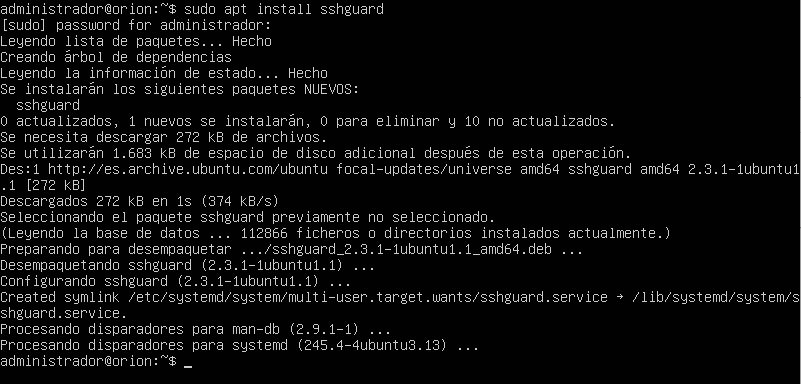
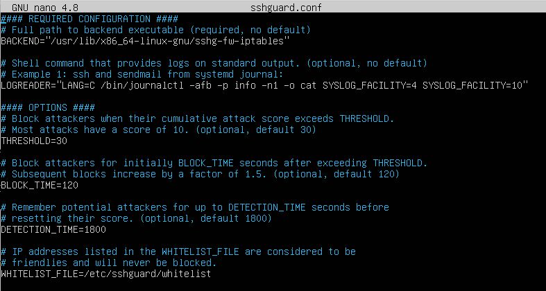
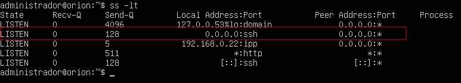
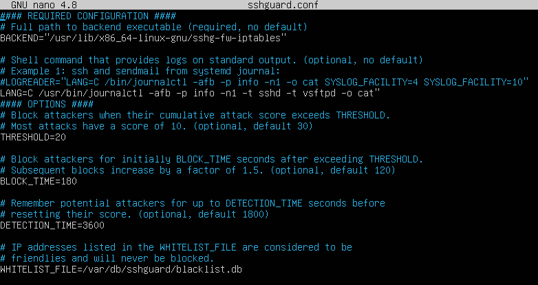
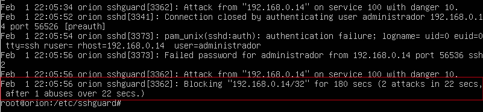
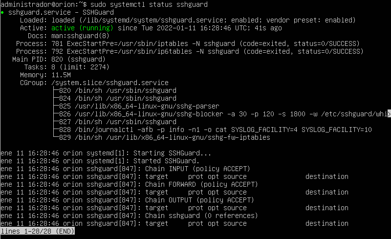

3.1.6 SSHGuard
1. Introducción
|
SSHGuard es una pequeña utilidad que se ejecuta en el servidor donde esté instalado OpenSSH y sirve para proteger el equipo contra ataques de fuerza bruta. También se puede utilizar para otros servicios (correo electrónico y FTP), aunque esta tarea sólo se trabajará en SSH. Con SSHGuard se podrá monitorizar los logs del servidor SSH y de otros servicios, detectar ataques y bloquear a los atacantes utilizando el cortafuegos del sistema operativo, y todo ello de manera automática. SSHGuard, es una alternativa a Fail2ban para proteger SSH contra ataques de fuerza bruta. |
2. ¿Qué es y para qué sirve SSHGuard?
SSHGuard es un software que se encargará de monitorizar los logs en diferentes formatos y también de diferentes servicios. Es capaz de reconocer los logs en diferentes formatos, entre los que se tienen los siguientes:
- macOS.
- Metalog.
- Multilog.
- raw log files.
- Syslog.
- Syslog-ng.
- systemd journal.
Los servicios compatibles con SSHGuard son los más conocidos en el mundo de la administración de sistemas. Actualmente se tienen los siguientes servicios:
- OpenSSH (Servidor SSH).
- Sendmail (Servidor de correo).
- Exim (Servidor de correo).
- Dovecot (Servidor de correo).
- Cucipop (Servidor de correo).
- UWimap (Servidor de correo).
- vsftpd (Servidor FTP/FTPES).
- proftpd (Servidor FTP/FTPES).
- pure-ftpd (Servidor FTP/FTPES).
- FreeBSD ftpd (Servidor FTP/FTPES).
Esta herramienta es capaz de leer los diferentes tipos de logs de diferentes servicios en el sistema, y de manera automática detectará y bloqueará dichos ataques utilizando el cortafuegos del sistema operativo. SSHGuard es compatible con los siguientes cortafuegos de sistemas basados en Unix y Linux:
- FirewallD.
- ipfw.
- IPFILTER.
- netfilter/iptables.
- netfilter/ipset.
- PF.
- tcpd’s hosts.allow.
- IBM AIX’s firewall.
Como características interesantes a destacar, son:
- Permite crear una lista negra de direcciones IP automáticamente.
- Supervisar varios archivos de registro simultáneamente.
- Tiene soporte completo con el protocolo de red IPv6.
3. Instalación y puesta en marcha
Esta herramienta está de manera predeterminada en los principales repositorios de software de Debian, Ubuntu, ArchLinux, FreeBSD, OpenSUSE y otras muchas distribuciones basadas en Unix y Linux, por lo que la instalación se debe realizar a través del gestor de paquetes de la distribución que se disponga, para nuestro caso, Ubuntu Server 20.04.3.
administrador@orion:~$ sudo apt install sshguard

Figura 1. Instalación de sshGuard.
Si se accede al fichero de configuración sshguard.conf que se encuentra en /etc/sshguard, se pueden observar las siguientes secciones:
- BACKEND: Ruta del ejecutable del backend (requerido, no tiene valor por defecto).
- LOGREADER: Lo que se quiere fiscalizar a través de los registros del journal de systemd (opcional, sin valor predeterminado). Ejemplo: -t sshd.
- THRESHOLD: Número de intentos problemáticos disparan un bloque. Ejemplo de valor: 10.
- BLOCK_TIME: Número de segundos que se mantienen los bloqueos. Por defecto, el valor de BLOCK_TIME (cantidad de tiempo predeterminada que el atacante está baneado) comienza en 120 segundos, y se incrementa en un factor de 1,5 cada vez que falla en otro intento de iniciar sesión. Ejemplo de valor: 60480 segundos (durante 24 horas).
- DETECTION_TIME: Número de segundos que se registran las direcciones IP. Ejemplo de valor: 60480 segundos (durante 24 horas).
- WHITELIST_FILE: Archivo de la lista blanca donde se puede incluir el fichero con la lista de ip's que no se bloquearán, ejemplo: WHITELIST_FILE=/var/db/sshguard/whitelist.db, se indica que todos los equipos con la ip que estén en el fichero blacklist.db no se bloquearán.
- BLACKLIST_FILE: Archivo de la lista negra donde se puede incluir el fichero con la lista de ip's que se bloquearán, ejemplo: BLACKLIST_FILE=100:/var/db/sshguard/blacklist.db, se indica que todos los equipos con la ip que estén en el fichero blacklist.db quedan bloqueados una vez alcancen un nivel de «peligro» de 100 (10 intentos de inicio de sesión fallidos con un costo de 10 cada uno, lo que explica el parámetro «100» en la configuración de la lista negra).

Figura 2. Fichero sshguard.conf.
Como ejemplo, se configura con las siguientes características:
- 4 intentos problemáticos disparan un bloqueo.
- Se quiere fiscalizar sshd a través de systemd journal.
- Los bloqueos se mantienen al menos durante 24 horas (60480 segundos).
- Registrar las direcciones IP durante 24 horas (60480 segundos).
- El fichero de la lista negra es blacklist.db y se encuentra en /var/db/sshguard/.
BACKEND="/usr/lib/x86_64-linux-gnu/sshg-fw-iptables"
LOGREADER="LANG=C /bin/journalctl -afb -p info -n1 -o cat -t sshd"
THRESHOLD=4
BLOCKTIME=60480
DETECTION_TIME=60480
BLACKLIST_FILE=100:/var/db/sshguard/blacklist.db
El archivo sshguard.conf que viene con Ubuntu hará hará que sshguard se reactive en sus propios mensajes de registro, bloqueando instantáneamente la IP tan pronto como cometa un solo error . (Este error parece haberse introducido en el paquete debian ascendente; los ejemplos proporcionados en la fuente sshguard no tienen este problema). Para solucionar esto, hay que modificar LOGREADER remplazando los SYSLOG_FACILITY por -t sshd (y posiblemente otros servicios que desea que supervise sshguard). La configuración debería quedar así:
LOGREADER="LANG=C /bin/journalctl -afb -p info -n1 -o cat -t sshd"
Una vez se haya modificado el fichero, hay que reiniciar el servicio (sshguard.service).
administrador@orion:~$ sudo systemctl reload-or-restart sshguard
3.1 Comprobaciones previas
Una vez instalado, se realizan una serie de comprobaciones antes de la puesta en marcha de sshGuard, son las siguientes:
1. Si se desea fiscalizar el servicio ssh, hay que comprobar que el equipo ubuntu server está ejecutando el servicio ssh, para ello, se puede utilizar el siguiente comando:
administrador@orion:~$ ss -lt

Figura 3. Servicio ssh a la escucha en el servidor.
En la figura 2, se puede observar que el servicio ssh está a la escucha.
2. Comprobar los archivos de auditoría en busca de intentos de acceso a SSH (/var/log/auth.log). En este punto, se puede utilizar la herramienta lnav.
administrador@orion:~$ lnav /var/log/auth.log

Figura 4. Archivos de auditoría con lnav.
3.2 Puesta en marcha
Una vez realizadas las comprobaciones, para la puesta en marcha de SSHGuard lo primero que hay que configurar es el sistema de logs en el servidor, para hacerlo, se dispone de documentación al respecto en la web oficial del software.
Después hay que que configurar ciertos parámetros en el firewall, para que SSHGuard sea capaz de bloquear las direcciones IP de los posibles atacantes que se tengan.
En la página web oficial del proyecto SSHGuard se puede encontrar toda la información sobre esta herramienta.
Lo principal que requiere la configuración es crear una cadena (chain) llamada sshguard, donde sshguard inserta automáticamente reglas para descartar paquetes de red provenientes de equipos peligrosos. A continuación, hay que agregar una regla para saltar desde la cadena INPUT a la cadena sshguard. Esta regla debe añadirse antes de cualquier otra regla que procese los puertos que sshguard protege.
Por lo tanto, en el fichero de configuración de iptables se necesitan 2 cosas:
- Definir una nueva cadena (chain) llamada sshguard (iptables -N sshguard).
- Indicar que la cadena INPUT pase por esa cadena creada (iptables -A INPUT -j sshguard).
Se recomienda incluirlo en el inicio de las reglas de filtrado del fichero iptables para descartar los paquetes lo antes posible.
Los comandos son los siguientes:
administrador@orion:~$ sudo iptables -N sshguard
administrador@orion:~$ sudo iptables -A INPUT -m multiport -p tcp --destination-ports 21,22 -j sshguard
Para guardar las reglas:
administrador@orion:~$ iptables-save > /etc/iptables/iptables.rules
Es recomendable desarrollar un script que contenga todas las reglas que se vayan creando en el servidor y en el inicio del sistema, arrancar el script.
Ejemplo: script iptables
4. Funcionamiento de SSHGuard
El funcionamiento de la herramientas es muy sencillo:
- Revisa los archivos de auditoría del sistema en busca de intentos de acceso no satisfactorios reincidentes.
- Bloquea las direcciones IP de los infractores utilizando alguna herramienta de firewall, entre ellas iptables. Si la dirección se encuentra en una lista blanca, no establece la regla en el firewall.
- Transcurrido un tiempo desbloquea la dirección del atacante, a no ser que se haya definido en una lista negra en cuyo caso no lo desbloquea.
SSHGuard en Ubuntu 20.04 parece funcionar aunque en realidad no aplica los filtros. Consulta para más información.
Ejemplos de baneados mediante sshGuard
1. Baneado moderado
En la siguiente regla de prohibición se fiscaliza sshd y vsftpd a través de los registros del journal de systemd. Se bloquean a los atacantes después de 2 intentos durante 180 segundos y el tiempo de bloqueo posterior aumentará en un factor de 1,5. Esta función de retraso multiplicativo es interna y no está controlada por la configuración. Los atacantes son recordados durante 3600 segundos y permanecen en la lista negra después de 10 intentos (10 intentos con un costo de 10 cada uno, lo que explica el parámetro «100» en la configuración de la lista negra). No solo se bloquea la IP del atacante, sino también toda la subred IPv4 24 (notación CIDR).
BACKEND="/usr/lib/x86_64-linux-gnu/sshg-fw-iptables"
LOGREADER="LANG=C /usr/bin/journalctl -afb -p info -n1 -t sshd -t vsftpd -o cat"
THRESHOLD=20
BLOCK_TIME=180
DETECTION_TIME=3600
BLACKLIST_FILE=100:/var/db/sshguard/blacklist.db
IPV4_SUBNET=24

Figura 5. Fichero de configuración de sshguard.
Test de prueba
A continuación se pone a prueba con un simple test. Se intentan una serie de logins por ssh sin éxito en el equipo protegido por sshguard y se observa lo siguiente en el /var/log/auth.log de dicho equipo:

Figura 6. Bloqueo por 2 intentos por ssh.
Como se puede observar, se ha bloqueado a la 192.168.9.14 después de 2 intentos fallidos.
2. Baneado agresivo
Para algunos usuarios sometidos a ataques constantes, se puede adoptar una política de prohibición más agresiva. Si está seguro de que los intentos de inicios de sesión fallidos son poco probables que sean accidentales, se puede indicar a SSHGuard que prohíba permanentemente los servidores después de un solo intento de inicio de sesión fallido. Para ello, hay que modificar los parámetros en el archivo de configuración de la siguiente manera:
THRESHOLD=10
BLACKLIST_FILE=10:/var/db/sshguard/blacklist.db
Finalmente, para consolidar los cambios hay que reiniciar el servicio sshguard.service.
administrador@orion:~$ sudo systemctl reload-or-restart sshguard
Además, para evitar múltiples intentos de autenticación durante una sola conexión, se puede modificar el fichero /etc/ssh/sshd_config definiendo:
MaxAuthTries 1
Finalmente, para consolidar los cambios hay que reinciar el servicio sshguard.service.
administrador@orion:~$ sudo systemctl reload-or-restart sshguard
Comprobar el estado
Para conocer el estado del servicio sshguard, se puede utilizar el siguiente comando que indicará los servicios que están supervisados:
administrador@orion:~$ sudo systemctl status sshguard

Figura 7. Estado de sshguard.
Comprobaciones finales
Si en el servidor ya hay direcciones IP bloqueadas se deberían mostrar en el cortafuegos dentro del apartado Chain sshguard.
administrador@orion:~$ sudo iptables -L
5. Referencias
Obra publicada con Licencia Creative Commons Reconocimiento No comercial Compartir igual 4.0